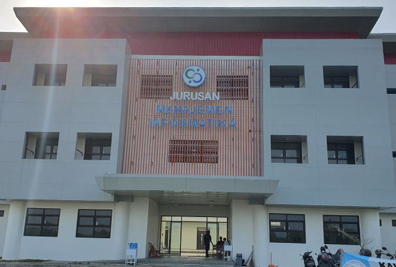

Politeknik Negeri Subang adalah perguruan tinggi negeri pertama di Kabupaten Subang. Pendidikan Politeknik Negeri Subang merupakan Pendidikan Tinggi Vokasi Program Diploma III yaitu program pendidikan yang bertujuan menyiapkan tenaga ahli, terampil, siap kerja, dan mampu bersaing di bidangnya yang ditempuh dalam kurun waktu 3 tahun atau 6 semester.
Pilih Prodi di Politeknik Negeri Subang
| Prodi | Mahasiswa Aktif |
| D3 Sistem Informasi | Fatimah Az-Zahra |
| D3 Sistem Informasi | Fitriawati |
| D3 Sistem Informasi | Gita Ramadani |
| D3 Sistem Informasi | Hana Hanifah |